●メッセージボックス
- ダイアログ (dialog) は重要なメッセージを表示するために開かれるウィンドウ
- ユーザーがダイアログに応答しない限り、そのアプリケーションでは他の操作を行うことはできない
- Tkinter の場合、モジュール messagebox を使うと簡単にダイアログを表示することができる
- Python2 は tkMessageBox だったが、Python3 からは messagebox になった
- messagebox に用意されている関数を以下に示す
- askokcancel()
ok, cancel ボタン (ok => Ture, cancel => False) - askquestion()
yes, no ボタン (ok => 'yes', no => 'no') - askretrycancel()
retry, cancel ボタン (retry => True, cancel => False) - askyesno()
yes, no ボタン (yes => Ture, no => False) - showerror()
ok ボタン (ok => 'ok') - showinfo()
ok ボタン (ok => 'ok') - showwarning()
ok ボタン (ok => 'ok') - これらの関数を実行すると、メッセージを表示してユーザーがボタンを押すまで待つ
- オプション title でダイアログのタイトルを指定する
- オプション message でダイアログに表示する文字列を指定する
- これらの関数は押したボタンの種別を返す
- 簡単な使用例
リスト : messagebox のサンプル
import tkinter as tk
import tkinter.messagebox as msg
root = tk.Tk()
n = tk.IntVar()
n.set(0)
func_table = (msg.showinfo, msg.showwarning, msg.showerror, msg.askquestion, msg.askokcancel,
msg.askyesno, msg.askretrycancel)
name_table = ('showinfo', 'showwarning', 'showerror', 'askquestion',
'askokcancel', 'askyesno', 'askretrycancel')
def message_box():
func = func_table[n.get()]
func(title = 'about', message = 'message box のサンプルです')
for m, name in enumerate(name_table):
tk.Radiobutton(root, text = name, value = m, variable = n).pack(anchor='w')
tk.Button(root, text = "Open message box", command = message_box).pack()
root.mainloop()
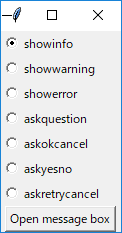 メインウィンドウの画像
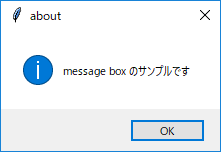 メッセージボックス showinfo()の画像
 メッセージボックス askretrycancel() の画像
メッセージボックス askretrycancel() の画像
●キャンバス
- キャンバス (canvas) ウィジェットは、矩形、直線、楕円などの図形のほかに、イメージ、文字列、任意のウィジェットを表示できる
- キャンバスウィジェットは Canvas() で生成する
- 次のプログラムを実行すると、空のウィンドウが表示される
リスト : キャンバスウィジェット import tkinter as tk root = tk.Tk() c0 = tk.Canvas(root, width = 150, height = 150) c0.pack() root.mainloop()
- これで図形を表示するキャンバスをウィンドウに配置したことになる
- また、キャンバスとスクロールバーを組み合わせて、表示範囲を変更することもできる
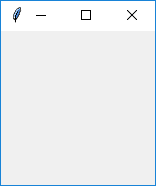 空のキャンバス
- 図形を描画するメソッドを下表に示す
| create_line() | 直線（折れ線） |
| create_oval() | 楕円 |
| create_arc() | 円弧（楕円の円周の一部） |
| create_rectangle() | 矩形 |
| create_polygon() | 多角形 |
| create_image() | イメージ |
| create_bitmap() | ビットマップ |
| create_text() | 文字列 |
| create_window() | 任意のウィジェット |
- 図形を描画するメソッドは、図形を表す番号 (ID) を返す
- これを使って図形を操作する
- ウィジェットの cget() や configure() に対応するメソッドが itemcget() と itemconfigure()
- 楕円
リスト : 楕円の描画 import tkinter as tk root = tk.Tk() c0 = tk.Canvas(root, width = 150, height = 150) id = c0.create_oval(10, 10, 140, 140) # c0.itemconfigure(id, fill = 'red') c0.pack() root.mainloop()
- 楕円の場合、指定した矩形に内接するように描画される
- c0.itemconfigure(id, fill = 'red') を追加すると楕円の中を赤色に塗りつぶす
- よく使われるオプションには次のものがある
- fill = 内部を塗りつぶす色
- stipple = ビットマップ (内部を塗りつぶすときの模様になるビットマップ)
- outline = 枠の色
- width = 枠の幅 (デフォルトは 1.0)
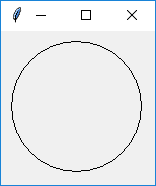 楕円の描画
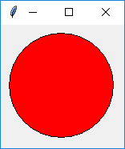 楕円の描画 (塗りつぶし)
- 矩形
リスト : 矩形の描画 import tkinter as tk root = tk.Tk() c0 = tk.Canvas(root, width = 150, height = 150) c0.create_rectangle(10, 10, 140, 140, fill = 'green', stipple = 'gray25') c0.pack() root.mainloop()
- 矩形も楕円と同じ指定方法
- stipple には、Tk に標準で組み込まれているビットマップを指定するのが一般的
- よく使うビットマップが灰色の模様を表す gray12, gray25, gray50, gray75 など
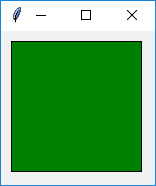 矩形の描画 (stipple なし)
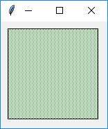 矩形の描画 (stipple あり)
- 直線
リスト : 直線の描画 import tkinter as tk root = tk.Tk() c0 = tk.Canvas(root, width = 150, height = 150) c0.create_line(10, 10, 140, 10, 10, 140, 140, 140) c0.pack() root.mainloop()
- 2 点間だけではなく複数の点を指定すると、その間を直線で結ぶ
- 直線の場合、線の色は outline ではなくて fill で指定する
- 太さは width で指定する
- オプション smooth を真 (True) に指定すると、滑らかな曲線を描画することができる
- このほかにも、矢印の設定や折り返しのときの形など、いろいろなオプションが用意されてる
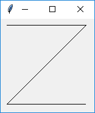 直線の描画
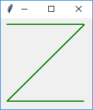 直線の色と太さを変更
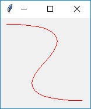 直線の描画(smooth = True)
- 多角形
リスト : 多角形の描画 import tkinter as tk root = tk.Tk() c0 = tk.Canvas(root, width = 150, height = 150) c0.create_polygon(75, 10, 140, 70, 110, 140, 40, 140, 10, 70) c0.pack() root.mainloop()
- 多角形 (polygon) は各頂点の座標を指定し、最初の点と最後の点が結ばれて閉じた図形になる
- デフォルトで fill オプションが黒、outline は描画されない
- smooth を真 (True) に指定すると、多角形の角を丸める
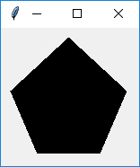 多角形の描画
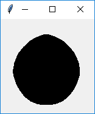 多角形の描画 (smooth = True)
- 円弧
リスト : 円弧の描画
import tkinter as tk
root = tk.Tk()
c0 = tk.Canvas(root, width = 400, height = 200)
r = 0
for c in ['red', 'blue', 'green', 'pink', 'cyan', 'yellow',
'magenta', 'brown', 'orange', 'white', 'gray', 'black']:
c0.create_arc(10, 10, 390, 190, start = r, extent = 30, fill = c)
r += 30
c0.pack()
root.mainloop()
- create_arc() は楕円の円周の一部分を表示する
- 座標の指定は create_oval() と同じ
- オプションで表示する範囲を指定する
- start = 角度, 開始位置を角度で指定
- extent = 角度, 終了位置を開始位置からの角度で指定
- style = 種別
arc : 円周のみ描画
chord : 円周と始点終点を結ぶ線分
pieslice : 円周と中心から始点、終点を結ぶ線分 - 角度は度数でプラスが反時計回り、マイナスが時計回り
- create_oval() と同じオプションが使えるが、style が arc のとき fill は無効
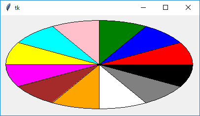 円弧の描画
- イメージ
リスト : イメージの表示 import tkinter as tk root = tk.Tk() c0 = tk.Canvas(root, width = 400, height = 300) c0.pack() image_data = tk.PhotoImage(file = 'earth.gif') c0.create_image(200, 150, image = image_data) root.mainloop()
- キャンバスはイメージとビットマップも表示することができる
c0.create_image(x, y, オプション, ... ) c0.create_bitmap(x, y, オプション, ... )
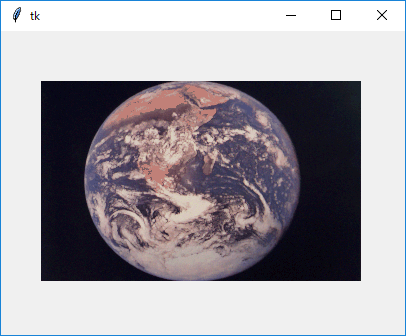 イメージの描画
- 文字列の表示
リスト : テキストの表示
import tkinter as tk
root = tk.Tk()
c0 = tk.Canvas(root, width = 150, height = 150)
c0.create_text(75, 75, text = 'hello, world!', font = ('', 14))
c0.pack()
root.mainloop()
- create_text() でキャンバスに文字を描くことができる
c0.create_text(x, y, オプション, ...)
- anchor = 位置 (座標とテキストの位置関係)
- font = フォント
- fill = 色
- justify = mode (center:中揃え, left:左揃え, right:右揃え)
- text = 文字列
- width = 長さ
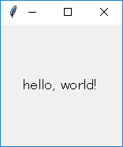 テキストの描画
- ウィジェット
リスト : ラベルウィジェットの表示
import tkinter as tk
root = tk.Tk()
c0 = tk.Canvas(root, width = 150, height = 150)
a0 = tk.Label(root, text = 'hello, world!', bg = 'green', font = ('', 14))
c0.create_window(75, 75, window = a0)
c0.pack()
root.mainloop()
- キャンバスの中にほかのウィジェットを表示させる場合はメソッド create_window() を使う
c0.create_window(x, y, オプション, ...)
- anchor = 位置 (座標とウィジェットの位置関係)
- window = 表示するウィジェット
- width = ウィジェットの幅
- height = ウィジェットの高さ
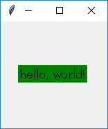 ラベルの描画
- 図形を操作するときによく使うメソッドを下表に示す
| type(ID) | 図形の種別を返す |
| bbox(ID, ...) | 指定した図形を囲む領域 (矩形) をリストにして返す |
| coords(ID, x0, y0, ...) | 図形の座標の設定や問い合わせ |
| delete(ID, ...) | 図形の削除 |
| move(ID, dx, dt) | 図形の移動 |
| tag_lower(ID1, ID2) | 重なり順を低くする |
| tag_raise(ID1, ID2) | 重なり順を高くする |
| tag_bind(ID, eventsequence, callback) | バインディングの設定 |
●タグとバインド
- 図形にバインディングを設定するには tag_bind() を使う
リスト : バインディングの設定 (1)
import tkinter as tk
root = tk.Tk()
c0 = tk.Canvas(root, width = 200, height = 150)
c0.pack()
id = c0.create_rectangle(10, 10, 20, 20, fill = 'brown')
# 移動
def move_rect(event):
x = event.x
y = event.y
c0.coords(id, x - 5, y - 5, x + 5, y + 5)
# バインディング
c0.tag_bind(id, '<Button1-Motion>', move_rect)
root.mainloop()
- 一辺の長さが 10 の矩形を作り、その矩形に対してバインディングを設定する
- イベント <B1-Motion> はドラッグに対応する
- メソッド tag_bind() で設定されたコールバック関数には、第 1 引数にイベントクラスのオブジェクトが渡される
- 関数 move_rect() では、新しい座標を計算してから、図形の位置を coords() で変更する
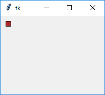 初期状態
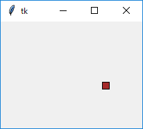 矩形をドラッグで移動する
- 図形には複数のタグ (tag) を設定することができる
- タグには荷札という意味があり、図形に識別子をつける働きをする
- 図形を操作するコマンドは、操作対象となる図形の指定を、番号のほかにもタグを使って行うことができる
- タグの設定は、図形を生成するときにオプション tags で行う
- 簡単な使用例
リスト : バインディングの設定 (2)
import tkinter as tk
root = tk.Tk()
c0 = tk.Canvas(root, width = 200, height = 150)
c0.pack()
c0.create_rectangle(10, 10, 20, 20, fill = 'brown', tags = 'brown')
c0.create_rectangle(20, 10, 30, 20, fill = 'brown', tags = 'brown')
c0.create_rectangle(30, 10, 40, 20, fill = 'brown', tags = 'brown')
# 移動
def move_rect(event):
x = event.x
y = event.y
c0.coords('current', x - 5, y - 5, x + 5, y + 5)
# バインディング
c0.tag_bind('brown', "<Button1-Motion>", move_rect)
root.mainloop()
- 3 つの矩形に共通のタグを設定し、それを使って操作する
- タグは文字列で指定する (今回は brown)
- バインディングを設定する場合、図形の番号ではなくタグ brown を指定する
- ただし、このままでは関数 move_rect() で操作対象となる矩形がわからない
- この場合、特別なタグ current を使う
- current は Python/Tkinter が設定するタグ (tk.CURRENT でもよい)
- マウスカーソルがある図形上にくると、その図形にタグ current を設定する
- その図形からマウスカーソルから出るとタグ current を削除する
- つまり、マウスカーソルが指している図形はタグ current で指定することができる
- これで、複数の矩形をひとつの関数で操作することができる
co.itemconfigure('brown', fill = 'green')
co.delete('brown')
- これでタグ brown の図形をすべて削除することができる
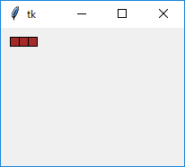 初期状態
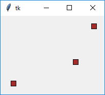 矩形をドラッグで移動する
●トップレベルウィンドウとメッセージ
- Tk() は新しいメインウィンドウを生成する
- 最初のウィンドウを閉じても、新しいウィンドウはそのまま存在する
- メインウィンドウと連動したウィンドウを生成するには Toplevel() を使う
sub_win = tk.Toplevel()
- 簡単な使用例
リスト : ウィンドウの生成
import tkinter as tk
root = tk.Tk()
root.option_add('*font', ('', 14))
# メッセージの表示
def message_window():
sub_win = tk.Toplevel()
tk.Message(sub_win, text = 'message のサンプルプログラムです').pack()
# メニューの設定
m = tk.Menu(root)
root.configure(menu = m)
m.add_command(label = 'About', under = 0, command = message_window)
# ラベルの設定
tk.Label(root, text = u'メニュー About を選んでね').pack()
root.mainloop()
- 最初に Toplevel() で新しいウィンドウ sub_win を生成する
- 次に、Message() でメッセージウィジェットを作りテキストを表示する
- メッセージウィジェットは複数行の文字列を表示することができる
- デフォルトでは、縦と横の比率が 150 % になるように、文字列を表示する領域を調整する
- この比率を指定するオプションが aspect
- aspect, 文字列を表示する領域の縦横比、100 より大きいと横長で、デフォルトは 150
- justify, 文字列の揃えを指定 (center : 中央寄せ、right : 右寄せ、left : 左寄せ)
- aspect は width よりも優先順位が低いので、width の値が優先される
- メッセージウィジェットの場合、width の値は文字数ではなくドット数になるので注意
- なお、サブウィンドウを表示したまま、もう一度 About をクリックすると、もうひとつ同じウィンドウが表示される
- これはあとで改良する
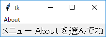 メインウィンドウ
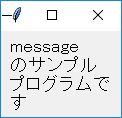 About をクリックしてサブウィンドウを表示
●ウィンドウの設定
- ウィンドウ (ウィジェット) の状態を調べる場合、Tcl/Tk ではコマンド winfo を使う
- Python/Tkinter では winfo のサブコマンドに相当するメソッドが多数用意されている
- ウィジェットの状態を調べるメソッドの一部を下表に示す
| widget.winfo_geometry() | ウィジェットの位置を文字列 (幅x高さ+x+y) で返す |
| widget.winfo_width() | ウィジェットの幅を返す |
| widget.winfo_height() | ウィジェットの高さを返す |
| widget.winfo_x() | 親ウィンドウ内での x 座標を返す |
| widget.winfo_y() | 親ウィンドウ内での y 座標を返す |
| widget.winfo_rootx() | ディスプレイ上での x 座標を返す |
| widget.winfo_rooty() | ディスプレイ上での y 座標を返す |
| widget.winfo_exists() | ウィジェットが存在するか |
- winfo_geometry() でウィジェットを指定した場合、そのウィジェットが配置されたウィンドウを基準にした座標になる
- winfo_x(), winfo_y() でメインウィンドウを指定すると、ディスプレイ上での座標を返す
- Tcl/Tk の場合、ウィンドウの設定はコマンド wm (Window Manager) で行う
- Python/Tkinter では wm のサブコマンドに相当するメソッドが多数用意されている
- ウィンドウを設定するメソッドの一部を下表に示す
| window.withdraw() | ウィンドウを画面から取り除く |
| window.deiconify() | ウィンドウを見える状態に戻す |
| window.iconify() | ウィンドウをアイコン化する |
| window.geometry(string) | ウィンドウを表示する位置を文字列で (幅x高さ+x+y) で指定する |
| window.maxsize(幅, 高さ) | ウィンドウの最大値を指定 |
| window.minsize(幅, 高さ) | ウィンドウの最小値を指定 |
| window.title(タイトル名) | ウィンドウのタイトルを指定 |
- 簡単な使用例
リスト : ウィンドウの生成 (改良版)
import tkinter as tk
root = tk.Tk()
root.title('Main')
root.option_add('*font', ('', 14))
sub_win = None
# メッセージの表示
def message_window():
global sub_win
if sub_win is None or not sub_win.winfo_exists():
sub_win = tk.Toplevel()
sub_win.title('About')
tk.Message(sub_win, aspect = 200,
text = 'message のサンプルプログラムです').pack()
# メニューの設定
m = tk.Menu(root)
root.configure(menu = m)
m.add_command(label = 'About', under = 0, command = message_window)
# ラベルの設定
tk.Label(root, text = u'メニュー About を選んでね').pack()
root.mainloop()
- sub_win が None でなければ、メソッド winfo_exists() でウィンドウ sub_win が開いているかチェックする
- まだ開いていないのであれば、Toplevel() でウィンドウを生成する
- それから、メソッド title() でウィンドウにタイトルを設定している
- サブウィンドウが開いた状態でメインウィンドウのメニュー about をクリックしても、新しいサブウィンドウは開かない
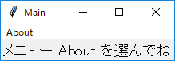 メインウィンドウ (改良版)
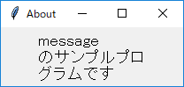 サブウィンドウ (改良版)
●state オプション
- ボタンやメニューに割り当てた機能が無効な場合、そのことをユーザーに知らせた方が使いやすいアプリケーションになる
- この場合、ウィジェットの状態を制御する state オプションを使うと便利
| normal | 通常の状態 |
| active | アクティブな状態 |
| disabled | 無効な状態 |
- ボタンなどのウィジェットでは、その上にマウスカーソルがくるとアクティブな状態になる
- Tk では、ウィジェットがアクティブな状態になったときに、そのウィジェットを強調表示することができる
- state に disabled を設定すると、そのウィジェットは無効な状態になる
- ボタンウィジェットであれば、ラベルの色が変わりマウスでボタンをクリックしても押すことができなくなる
- テキストの色はオプションで指定することができる
| activeforeground | アクティブ時の色を指定 |
| activebackground | アクティブ時の背景色を指定 |
| disabledforeground | 無効時の色を指定 |
- 無効時の背景色は通常の背景色と同じになる
- 簡単な使用例 (1)
リスト : ボタンの状態を変更する
import tkinter as tk
root = tk.Tk()
root.option_add('*font', ('', 14))
var = tk.StringVar()
var.set('normal')
# ボタン
b = tk.Button(root, text = 'button',
activeforeground = 'green', disabledforeground = 'red')
b.pack(fill = tk.X)
# 状態の変更
def change_state(): b.configure(state = var.get())
# ラジオボタンの設定
for x in ('normal', 'active', 'disabled'):
tk.Radiobutton(root, text = x, value = x,
variable = var, command = change_state).pack(anchor = tk.W)
root.mainloop()
- ラジオボタンで選択した値はグローバル変数 var に格納し、関数 change_state() でボタンの状態を変更する
- 変数 var は、あらかじめ normal に初期化しておく
- change_state() では、configure() を使って state に変数 var の値をセットするだけ
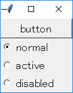 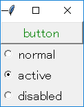 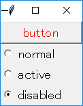 ボタンの状態を変更
- メニューの状態を変更
- メニューには複数の項目が登録されるが、それらの項目に対していろいろなオプションを設定することができる
- 項目を操作するために複数のメソッドが用意されているが、オプションを設定するメソッドが entryconfigure()
entryconfigure(項目, option, value)
| N | 数値で指定 (先頭の項目が 0 番目となる) |
| @N | 画面上端から N ピクセルだけ下にある項目 |
| end, last | 最後の項目 |
| active | アクティブな状態にある項目 |
| none | どれでもない項目 (全ての項目を非アクティブにするために使用する) |
| パターン | パターンと一致するラベル名を持つ項目 |
- 簡単な使用例 (2)
リスト : メニューの状態を変更する
import tkinter as tk
root = tk.Tk()
root.option_add('*font', ('', 14))
var = tk.StringVar()
var.set('normal')
def dummy(): pass
# メニューの設定
m0 = tk.Menu(root)
root.configure(menu = m0)
m1 = tk.Menu(m0, tearoff = False)
m0.add_cascade(label = 'Menu', under = 0, menu = m1)
m1.add_command(label = 'Menu1', command = dummy)
m1.add_command(label = 'Menu2', command = dummy)
m1.add_command(label = 'Menu3', command = dummy)
# 状態の変更
def change_state():
m1.entryconfigure('Menu1', state = var.get())
# ラジオボタンの設定
for x in ('normal', 'active', 'disabled'):
tk.Radiobutton(root, text = x, value = x,
variable = var, command = change_state).pack(anchor = tk.W)
root.mainloop()
- Menu1 の状態をラジオボタンで設定する
- ラジオボタンが選択されたら、change_state() でメニューの状態を変更する
- 項目の指定にはパターンを使用した
- メニューの状態を disabled に設定すると、Menu1 が灰色に表示され選択することができなくなる
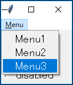 通常のメニュー
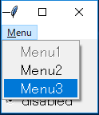 disabled に設定 (Menu1 が灰色)